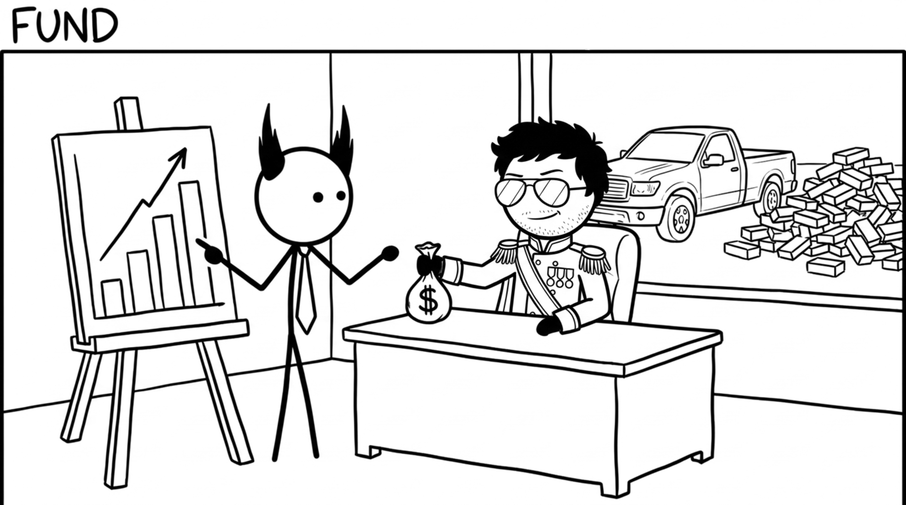

<section id="cap-fund" data-transition="fade" style="display:flex; align-items:center; justify-content:center; padding:0; background:#fcfcfa">

<p style="position:absolute;left:0;bottom:10px;width:1920px;margin:0;text-align:center;font-family:'Patrick Hand', 'Trebuchet MS', sans-serif;font-size:22px;color:#8a8f98">Copyright Dobromir Montauk 2026</p>
<aside><b>Fund.</b> Headcount and budget are capacity, and you have to earn them.<br>- A hiring plan and a comp plan that tie each dollar to an outcome the CEO cares about.<br>- Stay on budget, and share bad news early. Nothing builds CEO trust faster.<br>- Ask for the truck with a business case: what it costs, what it unlocks, when it pays back.<br>- Start small and earn more: a two-day draft, reviewed together, then sharpen the numbers.<br>Every yes from the CEO is spent from trust you built earlier.</aside>
</section>
